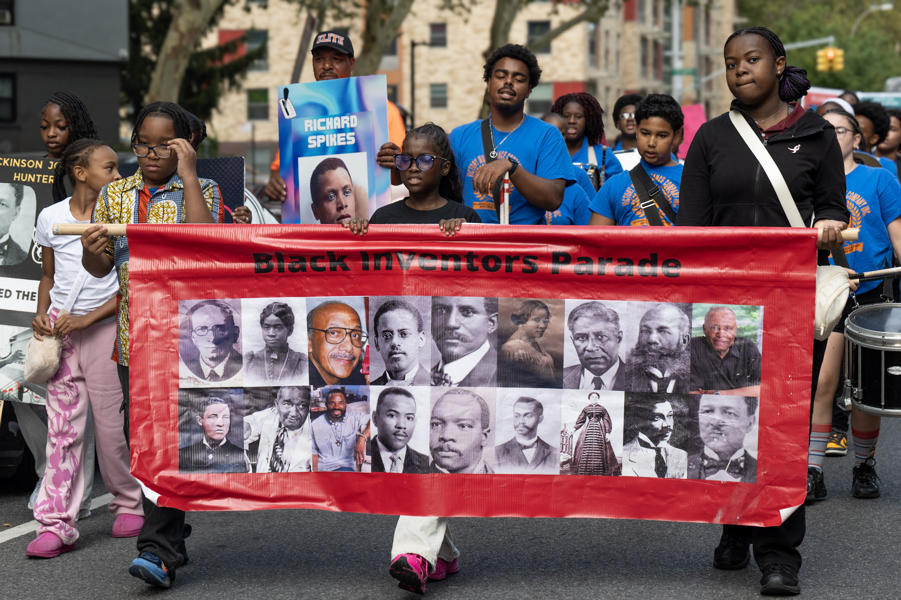
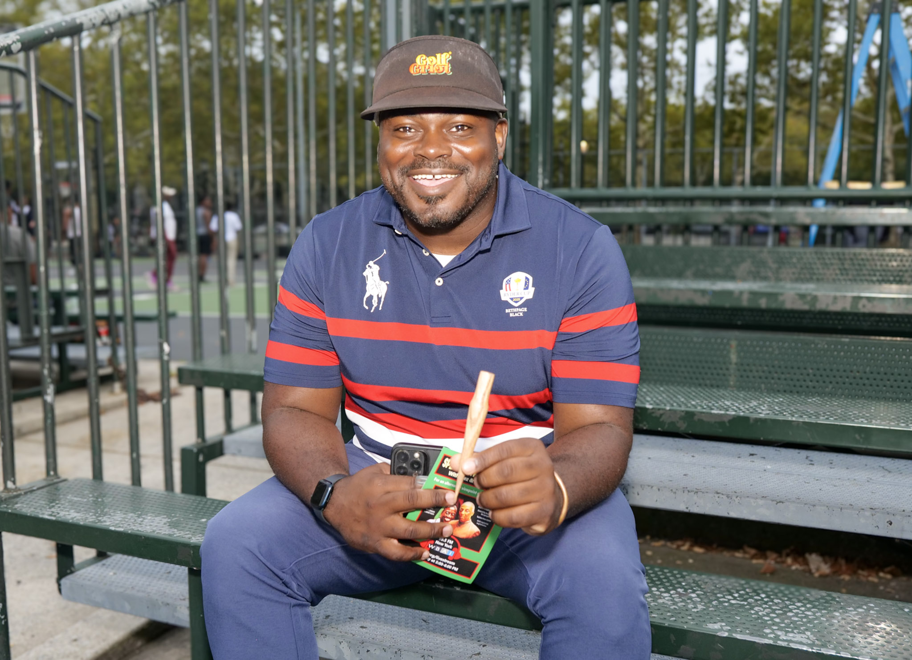
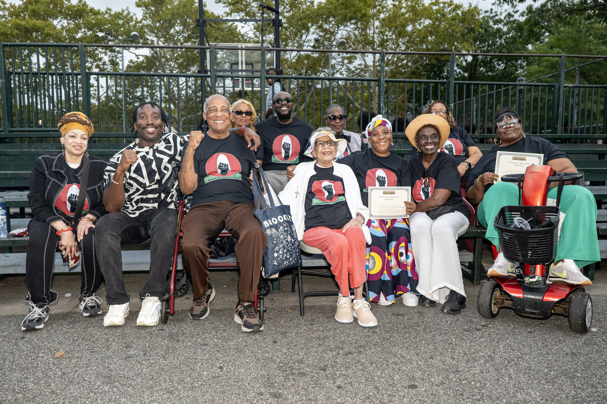

EAST NEW YORK, Brooklyn — “Who invented that?” “We invented that.” The chant echoed through East New York as students, teachers, families and community groups took part in the fifth annual Black Inventors Youth Parade, bringing a public lesson in Black history, pride and invention to neighborhood streets.
Most community members welcomed the procession from vehicles, storefronts and front stoops, calling out encouragement as students and teachers moved along the route. A smaller number of drivers appeared frustrated by the temporary traffic disruption, honking and accelerating around the march.

Students carry the Black Inventors Parade banner along the route during the fifth annual Black Inventors Youth Parade in East New York on Sept. 19, 2026. Photo: Deric Johnson / East New York Times
Students from East New York Middle School of Excellence, the Magnet School of Multimedia Arts and Engineering, P.S. 306 and other participating schools joined the event. Organizers and educators said the parade gives young people an opportunity to learn about Black inventors in a way that feels immediate and personal.
Keron on the parade’s purpose
Keron said the parade grew out of a broader conversation about how to get young people excited about school at the start of the academic year. He said organizers wanted to move beyond traditional school-supply giveaways and create something that would spark imagination and connect students to math, science and technology.
“Let’s do this Black Inventors Youth Parade and get the young people to be inspired by what has happened, what has transpired, what has been created to get their imaginations going, to make them think about math, technology and science and put it to use in everything that’s around them,” Keron said.
He said he hopes students and parents come away with a better understanding of how everyday life has been shaped by inventors who saw what did not yet exist and created it. He also described the parade as a standing annual invitation to the community, held each September during back-to-school season in District 19 in East New York.
Miss Nelson, a sixth-grade math teacher at East New York Middle School of Excellence, said the event underscored the need to teach students about Black innovation earlier.
“This was the first time only a week ago that I realized that that was a Black woman who made the GPS,” Nelson told the crowd. “If we don’t start now, our kids will be learning this 50-something years [later]. And that’s not what we want, because then they can’t dream.”
Dr. Kemp, principal of the Magnet School of Multimedia Arts and Engineering, described the event as “empowerment in action.”
“They have to see it. They have to know it to believe it and to be it,” Kemp said.
Yasmin Hoody, principal of P.S. 306, said the parade gave students a chance to engage in community service, honor where they come from and reflect on what they are capable of.
A lesson in invention
Kelley Pierce of All Access Golf LLC used a golf tee to highlight the legacy of Dr. George Franklin Grant, a Black dentist and Harvard Dental School graduate who received a patent for an early wooden golf tee in 1899.

Kelley Pierce of All Access Golf LLC holds a wooden golf tee while explaining the legacy of Dr. George Franklin Grant, who patented an early wooden golf tee in 1899, at the Black Inventors Youth Parade in East New York on Sept. 19, 2026. Photo: Deric Johnson / East New York Times
Pierce told students that Grant’s story shows why it is important to protect original ideas and create a historical record.
“Patent your ideas,” Pierce told the crowd. “That way there’s always a historical record.”
The demonstration connected the broader theme of the parade to an everyday object many students already recognized.
Community partners
Former Council Member Inez Barron thanked teachers and school staff members who spent part of their Saturday accompanying students to the event. She encouraged students to learn more about the Black innovators and inventors recognized throughout the parade.
The event also included recognition for former Council Member Charles Barron, Brooklyn Community Board 5, District 19, Superintendent Collins and participating parents. Sister Shannon, speaking on behalf of District 19, said the district looked forward to continuing the partnership and building on the event next year.
Victory Music and Dance, which organizers said has been part of the parade since its beginning, provided drumming and music along the route. The Flossy Organization was also recognized as a new participant, with organizers citing its work in Canarsie.

Organizers and community partners gather for a group photo, several holding certificates of appreciation, after the fifth annual Black Inventors Youth Parade in East New York on Sept. 19, 2026. Photo: Deric Johnson / East New York Times
Along the route
A vehicle labeled Elite led the procession, while a Man Up van followed behind. Volunteers wearing bright shirts marked Violence Prevention Team, Cure Violence Global and Man Up Inc. walked in front of, behind and alongside the students and teachers.
Volunteers in Violence Prevention Team and Elite shirts confer along the parade route during the fifth annual Black Inventors Youth Parade in East New York on Sept. 19, 2026. Photo: Deric Johnson / East New York Times
The formation helped keep the group together as the parade moved along active streets. NYPD Community Affairs personnel were present at the beginning of the event and spoke with organizers, but they did not escort the procession.
As the parade continued through East New York, the chant remained at the center of the event’s message. For the students who took part, organizers and educators framed the day as both a celebration of Black history and a reminder that innovation is part of their future.
About the reporting. Remarks from organizers, teachers, principals and community partners were recorded on site during the fifth annual Black Inventors Youth Parade in East New York on Sept. 19, 2026. Descriptions of the route, the procession and community reaction are based on the reporter’s observations at the event.
Sources
- Remarks and interviews recorded on site at the fifth annual Black Inventors Youth Parade by the East New York Times, Sept. 19, 2026.
- Observations of the parade route, participating organizations and community reaction by the East New York Times, Sept. 19, 2026.
- U.S. Patent No. 638,920, George F. Grant, “Golf-Tee,” issued Dec. 12, 1899 — patents.google.com/patent/US638920A